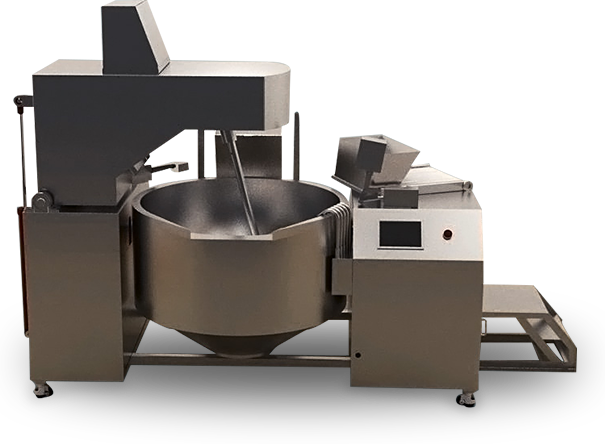
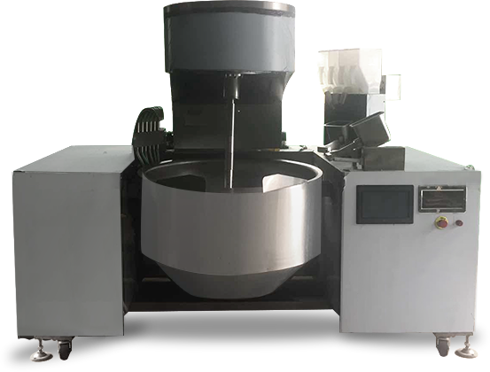
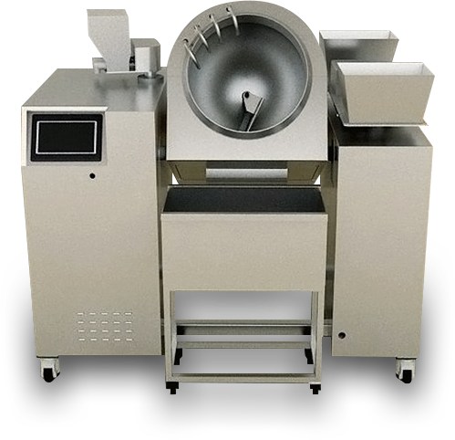
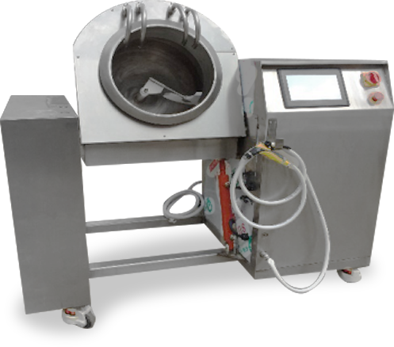

首页
产品中心
菜单
主页
关于我们
公司产品
个人中心

行星搅拌FR-全自动
适合中型规模以上及大型餐饮业使用，性价比高，能耗低，适合炒制单一品种菜品或原材料加工，节省人力成本

行星搅拌FR-半自动
适合中型规模以上及大型餐饮业使用，性价比高，能耗低，适合炒制单一品种菜品或原材料加工，节省人力成本

滚筒搅拌GT-全自动
适合中型规模以上及大型餐饮业使用，性价比高，能耗低，适合炒制单一品种菜品或原材料加工，节省人力成本

滚筒搅拌GT -半自动
适合中型规模以上及大型餐饮业使用，性价比高，能耗低，适合炒制单一品种菜品或原材料加工，节省人力成本